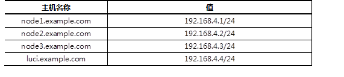

准备四台KVM虚拟机，其三台作为集群节点，一台安装luci并配置iSCSI存储服务，实现如下功能：
使用4台虚拟机，1台作为luci和iSCSI服务器、3台作为节点服务器，拓扑结构如图-1所示。
图-1
所有主机的主机名及对应的IP地址如表-1所示。
表－1 主机名称及对应IP地址表

实现此案例需要按照如下步骤进行。
步骤一：安装前准备
1）为所有节点配置yum源，注意所有的虚拟主机均需要挂载安装光盘。
[root@node1 ~]# mount /dev/cdrom /media [root@node1 ~]# rm -rf /etc/yum.repos.d/* [root@node1 ~]# vim /etc/yum.repos.d/dvd.repo [dvd] name=red hat baseurl=file:///media/ enabled=1 gpgcheck=0 [HighAvailability] name=HighAvailability baseurl=file:///media/HighAvailability enabled=1 gpgcheck=0 [LoadBalancer] name=LoadBalancer baseurl=file:///media/LoadBalancer enabled=1 gpgcheck=0 [ResilientStorage] name=ResilientStorage baseurl=file:///media/ResilientStorage enabled=1 gpgcheck=0 [ScalableFileSystem] name=ScalableFileSystem baseurl=file:///media/ScalableFileSystem enabled=1 gpgcheck=0 [root@node1 ~]# yum clean all [root@node2 ~]# mount /dev/cdrom /media [root@node2 ~]# rm –rf /etc/yum.repos.d/* [root@node2 ~]# vim /etc/yum.repos.d/dvd.repo [dvd] name=red hat baseurl=file:///media/ enabled=1 gpgcheck=0 [HighAvailability] name=HighAvailability baseurl=file:///media/HighAvailability enabled=1 gpgcheck=0 [LoadBalancer] name=LoadBalancer baseurl=file:///media/LoadBalancer enabled=1 gpgcheck=0 [ResilientStorage] name=ResilientStorage baseurl=file:///media/ResilientStorage enabled=1 gpgcheck=0 [ScalableFileSystem] name=ScalableFileSystem baseurl=file:///media/ScalableFileSystem enabled=1 gpgcheck=0 [root@node2 ~]# yum clean all [root@node3 ~]# mount /dev/cdrom /media [root@node3 ~]# rm -rf /etc/yum.repos.d/* [root@node3 ~]# vim /etc/yum.repos.d/dvd.repo [dvd] name=red hat baseurl=file:///media/ enabled=1 gpgcheck=0 [HighAvailability] name=HighAvailability baseurl=file:///media/HighAvailability enabled=1 gpgcheck=0 [LoadBalancer] name=LoadBalancer baseurl=file:///media/LoadBalancer enabled=1 gpgcheck=0 [ResilientStorage] name=ResilientStorage baseurl=file:///media/ResilientStorage enabled=1 gpgcheck=0 [ScalableFileSystem] name=ScalableFileSystem baseurl=file:///media/ScalableFileSystem enabled=1 gpgcheck=0 [root@node3 ~]# yum clean all [root@luci ~]# mount /dev/cdrom /media [root@luci ~]# rm -rf /etc/yum.repos.d/* [root@luci ~]# vim /etc/yum.repos.d/dvd.repo [dvd] name=red hat baseurl=file:///media/ enabled=1 gpgcheck=0 [HighAvailability] name=HighAvailability baseurl=file:///media/HighAvailability enabled=1 gpgcheck=0 [LoadBalancer] name=LoadBalancer baseurl=file:///media/LoadBalancer enabled=1 gpgcheck=0 [ResilientStorage] name=ResilientStorage baseurl=file:///media/ResilientStorage enabled=1 gpgcheck=0 [ScalableFileSystem] name=ScalableFileSystem baseurl=file:///media/ScalableFileSystem enabled=1 gpgcheck=0 [root@luci ~]# yum clean all
2）修改/etc/hosts并同步到所有主机。
[root@luci ~]# vim /etc/hosts
192.168.4.1 node1.example.com
192.168.4.2 node2.example.com
192.168.4.3 node3.example.com
192.168.4.4 luci.example.com
[root@luci ~]# for i in {1..3};do scp /etc/hosts 192.168.4.$i:/etc/;done
3）所有节点关闭NetworkManager、SELinux服务。
[root@luci ~]# service NetworkManager stop [root@luci ~]# chkconfig NetworkManager off [root@luci ~]# sed -i '/SELINUX=/s/enforcing/permissive/' /etc/sysconfig/selinux [root@luci ~]# setenforce 0 [root@luci ~]# iptables -F; service iptables save [root@node1 ~]# service NetworkManager stop [root@node1 ~]# chkconfig NetworkManager off [root@node1 ~]# sed -i '/SELINUX=/s/enforcing/permissive/' /etc/sysconfig/selinux [root@node1 ~]# setenforce 0 [root@node1 ~]# iptables -F; service iptables save [root@node2 ~]# service NetworkManager stop [root@node2 ~]# chkconfig NetworkManager off [root@node2 ~]# sed -i '/SELINUX=/s/enforcing/permissive/' /etc/sysconfig/selinux [root@node2 ~]# setenforce 0 [root@node2 ~]# iptables -F; service iptables save [root@node3 ~]# service NetworkManager stop [root@node3 ~]# chkconfig NetworkManager off [root@node3 ~]# sed -i '/SELINUX=/s/enforcing/permissive/' /etc/sysconfig/selinux [root@node3 ~]# setenforce 0 [root@node3 ~]# iptables -F; service iptables save
步骤二：部署iSCSI服务
1）在luci主机上部署iSCSI服务器，将/dev/sdb使用iSCSI服务共享。
提示：服务器IQN名称为: iqn.2015-06.com.example.luci:cluster。
[root@luci ~]# yum -y install scsi-target-utils //安装软件
.. ..
[root@luci ~]# rpm -q scsi-target-utils
scsi-target-utils-1.0.24-10.el6.x86_64
[root@luci ~]# vim /etc/tgt/targets.conf
<target iqn.2015-06.com.example.luci:cluster>
# List of files to export as LUNs
backing-store /dev/sdb //定义存储设备
initiator-address 192.168.4.0/24 //定义ACL
</target>
[root@luci ~]# service tgtd start //启动服务
Starting SCSI target daemon: [ OK ]
[root@luci ~]# chkconfig tgtd on
2）所有节点服务器挂载该iSCSI共享。
[root@node1 ~]# yum -y install iscsi-initiator-utils //安装软件 [root@node1 ~]# iscsiadm -m discovery -t sendtargets -p 192.168.4.4:3260 [root@node1 ~]# iscsiadm -m node -T \ >iqn.2015-06.com.example.luci:cluster \ >-p 192.168.4.4:3260 -l //挂载iSCSI共享 [root@node1 ~]# iscsiadm -m node -T \ >iqn.2015-06.com.example.luci:cluster \ >-p 192.168.4.4:3260 -l [root@node2 ~]# yum -y install iscsi-initiator-utils //安装软件 [root@node2 ~]# iscsiadm -m discovery -t sendtargets -p 192.168.4.4:3260 [root@node2 ~]# iscsiadm -m node -T \ >iqn.2015-06.com.example.luci:cluster \ >-p 192.168.4.4:3260 –l //挂载iSCSI共享 [root@node2 ~]# iscsiadm -m node -T \ >iqn.2015-06.com.example.luci:cluster \ >-p 192.168.4.4:3260 -l [root@node3 ~]# yum -y install iscsi-initiator-utils //安装软件 [root@node3 ~]# iscsiadm -m discovery -t sendtargets -p 192.168.4.4:3260 [root@node3 ~]# iscsiadm -m node -T \ >iqn.2015-06.com.example.luci:cluster \ >-p 192.168.4.4:3260 -l //挂载iSCSI共享 [root@node3 ~]# iscsiadm -m node -T \ >iqn.2015-06.com.example.luci:cluster \ >-p 192.168.4.4:3260 –l
步骤三：安装集群软件
1）在luci.example.com主机上安装luci，并启动服务。
[root@luci ~]# yum –y install luci [root@luci ~]# service luci start;chkconfig luci on
2）在所有的集群节点中安装ricci，并启动服务。
[root@node1 ~]# yum -y install ricci [root@node1 ~]# echo "11111" |passwd --stdin ricci [root@node1 ~]# service ricci start;chkconfig ricci on [root@node2 ~]# yum -y install ricci [root@node2 ~]# echo "11111" |passwd --stdin ricci [root@node2 ~]# service ricci start;chkconfig ricci on [root@node3 ~]# yum -y install ricci [root@node3 ~]# echo "11111" |passwd --stdin ricci [root@node3 ~]# service ricci start;chkconfig ricci on
步骤四：配置集群
1）浏览器访问luci，任意主机使用浏览器访问即可。
[root@luci ~]# firefox https://luci.example.com:8084
2）创建集群。
使用浏览器访问luici页面后，点击“Manage Clusters“页面，点击”Create“按钮创建一个新的集群，如图-2所示。
图-2
接下来，在弹出的回话框中，输入集群的名称“tarena“，勾选”Download Packages“、“Reboot Nodes Befor Joining Cluster”、“Enable Shared Storage Support”，效果如图-3所示。
图-3
等待所有的节点重启之后，在luci页面将显示如图-4所示的页面，代表所有节点以及加入到了tarena集群中。
图-4
提示：如果节点重启后，有部分节点无法自动加入集群中，可以将正常的节点系统中/etc/cluster/cluster.conf文件同步到其他失败的节点中，并确保失败节点的cman和rgmanager服务为启动状态即可。
沿用练习一，使用集群中的节点创建高可用Apache服务，实现以下目标：
沿用练习一的拓扑架构，依次完成如下操作：
实现此案例需要按照如下步骤进行。
步骤一：准备存储资源，并在所有节点安装httpd软件
1）在任一集群节点将iSCSI磁盘分区并格式化。
[root@node1 ~]# parted /dev/sdb mklabel msdos [root@node1 ~]# parted /dev/sdb mkpart primary 1 1000 [root@node1 ~]# partprobe [root@node1 ~]# mkfs.ext4 /dev/sdb1
2）安装httpd软件
[root@node1 ~]# yum –y install httpd [root@node2 ~]# yum –y install httpd [root@node2 ~]# yum –y install httpd
3）挂载共享存储并生成测试web页面
[root@node1 ~]# mount /dev/sdb1 /var/www/html [root@node1 ~]# echo “test page for rhcs” > /var/www/html/index.html
步骤二：创建Fence设备
1）安装软件包，生成共享秘钥。
[root@desktop1 ~]# yum -y install \ >fence-virtd fence-virtd-libvirt fence-virtd-multicast [root@desktop1 ~]# mkdir /etc/cluster [root@desktop1 ~]# dd if=/dev/urandom of=/etc/cluster/fence_xvm.key bs=4k count=1 [root@desktop1 ~]# chkconfig fence_virtd on
2）拷贝秘钥
[root@desktop1 ~]# for i in {1..3};do scp /etc/cluster/fence_xvm.key \
> 192.168.4.$i:/etc/cluster/; done
3）配置Fence
注意：Interface项填写网络接口，Backend module项填写libvirt。
[root@desktop1 ~]# fence_virtd –c [root@desktop1 ~]# service fence_virtd start
4）登录luci为集群节点添加Fence
在任一使用浏览器访问https://luci.example.com:8084，配置Fence。首先选择“Fence Devices”菜单后，选择Add添加按钮，效果如图-5所示。
图-5
在弹出的回话框中选择Fence设备的类型为Fence virt（Multicast Mode），并给fence设备设置名称，效果如图-6所示。
图-6
创建完Fence设备后，接下来还需要给每个节点添加该Fence设备，首先在集群中点击“Nodes”菜单，依次选择所有节点，给每个节点添加Fence 设备。如图-7所示，选择node1准备给该节点添加Fence设备。
图-7
在节点列表中选择了某个节点后，通过点击“Add Fence Method”添加Fence设备，效果如图-8所示。
图-8
选择“Add Fence Method”后在弹出的回话框中输入名称，如图-9所示。
图-9
接下来，执行最后的操作，为Fence设备添加实例，选择“Add Fence Instance”，效果如图-10所示。
图-10
在弹出的回话框中，选择之前创建的Fence实例“fence_xvm”，并为每个节点填写对应的虚拟机域名称，注意名称必须与虚拟机名称一致，如图-11所说。
图-11
步骤三：创建高可用Apache服务
1）创建故障转移域
在任一节点使用浏览器访问https://luci.example.com:8084，点击“Failover Domains”菜单，通过下面的Add按钮创建故障转移域，如图-12所示。
图-12
在弹出的回话框中为故障转移域填写名称：prefer_node1，依次勾选“Prioritized”、“Restricted”、“No Failback”，并为每个节点设置优先级，为了确保服务优先运行在node1上，我们将node1的优先级设置为1，如图-13所示。
图-13
2）创建资源（VIP、共享存储、Apache服务）
创建资源，可以通过点击“Resources”菜单，使用“Add”按钮创建，如图-14所示。
图-14
在弹出的回话框中，我们选择IP Address这个资源，并为该资源设置具体的参数，VIP地址为192.168.4.100，效果如图-15所示。
图-15
使用相同的方法，创建共享存储，在资源列表中选择Filesystem，并设置具体的参数将共享iSCSI磁盘挂载到/var/www/html中，为了确保挂载点的唯一性，这里我们使用的是设备的UUID（请各位同学根据自己的实际情况填写具体的值），查看UUID的方法是blkid /dev/sdb1，最终的设置效果如图-16所示。
图-16
最后创建Apache服务资源，在资源列表中选择Apache，设置名称为web_service，如图-17所示。
图-17
3）创建服务组
在任意节点使用浏览器访问https://luci.example.com:8084，点击“Service Groups”菜单，通过下面的Add按钮创建服务组，如图-18所示。
图-18
在弹出的回话框中，输入具体的参数，设置服务名称为web_clu，选择故障域为prefre_node1，恢复策略为Relocate，并通过Add Resource给该服务组添加服务资源，将上一步中创建的3个资源添加到该服务组中，效果如图-19所示。
图-19
步骤四：验证测试
在任意集群节点中，输入clustat查看集群及高可用服务运行状态，如图-20所示。
图-20